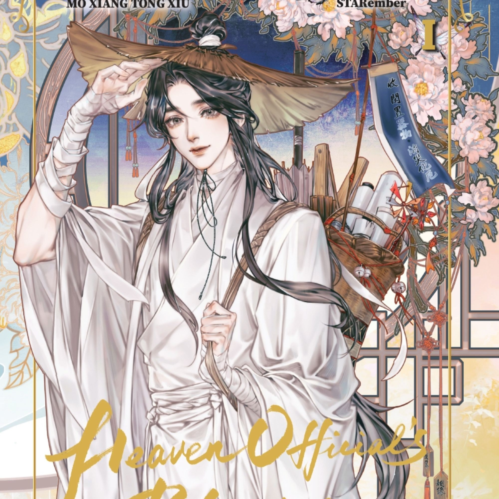
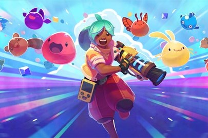

HOBBIES AND FAVOURITE ACTIVITIES
~~ READING ~~
In general, I read a bit of everything, action manga and romance novels are my favourite.
My top 5 list from "best to worst" would be:
Chainsaw Man - manga.
Heaven's Official Blessing - novela.
Oyasumi Pum Pum - manga.
Gokurakugai - manga.
Wolfsong - novela.

~~ Playing games ~~
According to my Steam and Nintendo Switch history..:
Animal Crossing New Horizon - 200 h.
Monster Hunter World - 72 h.
Phasmophobia - 65 h.
Stardew Valley - 60 h.
The Legend of Zelda TOTK - 25 h.
Slime Rancher 2 - 25 h.
